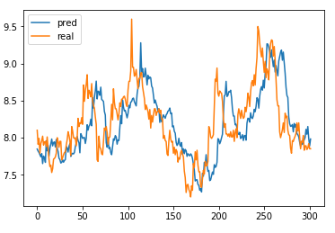

기술적 지표 주식분석에 있어 기존 시가, 종가, 상한가, 하한가, 거래량 데이터를 기술적 지표로 변환해 사용 한다.
우리가 사용한 오픈소스 라이브러리인 TA-Lib는 주식 차트의 기술적 분석을 위한 200여 가 지의 지표 함수를 제공하는 라이브러리로, python 패키지도 존재한다. 이 패키지를 이용하여 주식데이터에 대한 기술적 지표 데이터를 생성하고, 각 모델에 맞는 지표를 찾아 사용한다.
선형데이터가 아닌 0,1 로 학습시켰을 때 더 정확도가 떨어지며 처음에는 아무런 지표나 추가해 보았었는데 정확도 부분에서 차이가 별로 나지 않았다. 그래서 우리는 지표 값들에 대한 관계를 정리해 보고 정말 필요한 지표만을 선택해보는 방법 등을 연구하였다. 그 결과, 조금 더 정확한 결과값을 얻을 수 있었다.
MLP의 경우 가끔씩 예측을 전혀 못하는 경우 발생 Layer 개수나 데이터 전처리 과정(ex. Minmax ) 를 통해 더 수정해야 했다. RNN의 경우 cost가 너무 크게 나오는 문제 가 있었다. 그래서 learning rate나 output_dim 크기 변화를 줌으로써 cost를 계속해서 변경해주었다.
CNN 의 경우 정확도 높이기 위해 Kernel 개수나 layer 변화 0.x%의 차이로 큰 변화가 나지 않았다.
수정 후 MLP의 경우 선형 데이터로 학습, 예측 0,1 이용해 정확도 측정 -> 높은 정확도를 보였으며, 지표에 따라 y 에 영향 가는 정도를 분석 -> 적당한 지표 값 설정(알아보기 좋은) 각 모델의 결과를 csv로 출력 함 으로 써 모델 마다의 코드를 분할 -> csv 를 합치는 앙상블 코드를 구현해 총 4 개의 코드 파일로 구현
RNN의 경우 data 전체를 train/test하는 경우보다 정확도 상승 -> Amore를 제외한 5개의 기업이 3~18% 정확도가 상승하였으며, 전체 평균 9.47% 상승함 Step마다 정확도가 균일하지는 않았다.->점진적인 증가를 보이지 않았다.
CNN 의 경우 Step1에서는 정확도가 제일 낮게 나옴 3:3:4비율로 step을 나눈 것이 이전 train 7 -> train 3 -> test 때 보다 평균 정확도가 높아진 것을 볼 수 있음
디지털 시대가 도래함에 따라 우리는 수치 데이터를 이용한 대규모 데이터인 빅데이터를 tensorflow의 여러 모델을 이용하여 주가를 예측해 보았다. 주가 분석으로 상승 하락의 당락을 예측하기 위해서는 많은 양의 주가 데이터가 필요 했는데, Yahoo finance 사이트를 이용해 여러 기업의 각 10년 동안의 주가 데이터를 얻어와 필요한 데이터를 구축하였다.
이 후 조금 더 정확한 수치의 값으로 변환하기 위해 주식의 기술적 지표 함수를 이용했다. 우리는 같은 데이터로 최대의 정확도를 갖는 모델을 찾기 위해 총 3개의 모델을 구현했다.
딥 러닝의 모델로 MLP(Multiple layer perceptron), CNN(convolutional neural network), RNN(recurrent neural network)을 각각 구현 한 뒤 같은 데이터 셋을 넣어 정확도를 확인했다.
당일의 종가 데이터와 10일뒤의 종가 데이터 값을 비교해 당락을 예측 하는 것으로 정확도를 측정 하였고, 그 후 가장 좋은 정확도를 갖도록 각 모델을 앙상블이라는 기법을 이용해 최적화를 시킨다. 낮은 정확도등의 문제 해결 방안으로 지표의 조합에 따라 정확도가 변할 것이고, 각 모델마다 적합한 지표가 다른 것을 보았다. TA-Lib 데이터와 실제 결과 데이터(실제 종가 데이터)간의 연관성을 조사해 선형적인 연관성을 갖는 지표들을 이용하였다.
실제 주가 분석에 있어서도 이러한 경향의 그래프를 갖는 지표 값이 예측이 잘 되었다.
더 정확한 값을 예측하기 위해서 좀더 많은양의 DATA들과 MODEL들을 연구하여 보고 싶다는 생각을 했으며, tensorflow를 이용하여 직접 예측치를 확인하고 주가의 당락을 판단 할 수 있어서 재미있었다.